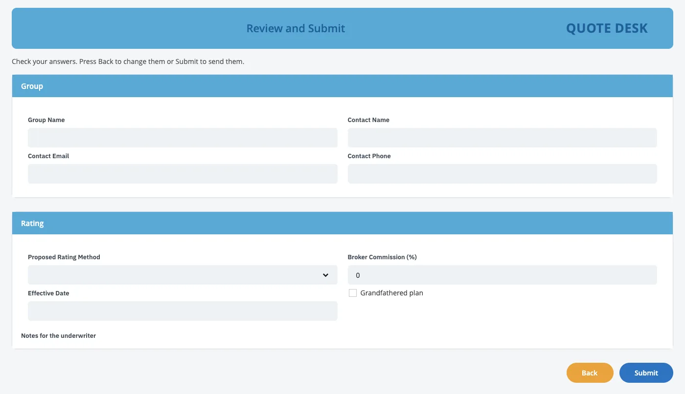

IBM Bob × BAW Dev Tools MCP · demo script
The Quote screen as reusable groups and widgets.
Bob builds the screen from reusable group Views, classic and then React with Carbon, and carries every group over. Along the way it writes a new widget, live.
- 60
- min
- 2
- acts
- 21
- tools
- 8
- groups
- 1
- new widget




T−30 00:00
Run of show, then the prep.
Run of show
- OpeningWhat the team asked for last time, and today's goal
- How it worksTwo widget toolkits, reusable groups, and how Bob uses them
- Act 1: the classic screen, in groupsPictures in; an app made of reusable group Views out; the groups in the app's User interface
- Act 2: modern, with a new widgetOne request: React + Carbon screens, the groups carried over, and a new Toggle widget in the toolkit
- Safety and questions
- Next stepsWhich groups and widgets the team wants next
Before the meeting Thirty minutes before
- Check the BAW login file (
.env) is filled in. Never show it on screen. - Get the latest project (
git switch main && git pull). Open it in Bob; the tools panel shows baw-dev-tools with 21 tools. If it shows fewer, restart baw-dev-tools in that panel. - Make sure the Toggle does not exist yet, so Bob creates it live. Run
git statusand check that these are absent:coach-ui/src/widgets/toggle.jsx,coach-ui/src/widgets/toggle.scss,coach-ui/widgets/icons/toggle.svg- a
"kind": "toggle"entry incoach-ui/widgets/modernizer-widgets.json
Terminal rm -f coach-ui/src/widgets/toggle.jsx coach-ui/src/widgets/toggle.scss coach-ui/widgets/icons/toggle.svg git checkout -- coach-ui/widgets/modernizer-widgets.json - Keep
screenshots/Quote/as it is: the six pictures of the old screen (image (1).pngtoimage (6).png) and the client's newer quote screen (generate-quote.png). It stays on this laptop and is never published. - Keep only the two toolkit builds in
work/(ABW-1.0.4.twx,MDW-1.6.0.twx), so Bob reads nothing from earlier runs. - Pick a new acronym and put it in the Act 1 request (the script uses
ZZGDEMO; useZZGDEMO2after a rehearsal). Names already used on the test server:- Apps: ZZQI, ZZLGQ, ZZLGQI, ZZSLX, ZZGRP, ZZGRP2, ZZGWQ, ZZLGG
- App Builder Widgets (ABW): up to 1.0.4
- Modernizer Widgets (MDW): up to 2.0.0, so Bob's new widget goes into 2.1.0 or later
- Do one full rehearsal, so you know how long each step takes. Keep the rehearsal app as a backup.
- Open Workflow Center (Business Automation Studio) in a second browser tab.
- In Bob, pick the 🏗️ BAW App Builder mode. Allow mode switches in Bob's auto-approve settings. Make the font bigger.
- Afterwards, ask a BAW admin to archive the test snapshots: Bob cannot delete apps or snapshots.
00:00 03:00 10:00
Widgets in toolkits, groups in your app.
Bob builds every screen from small widgets, and combines them into reusable group Views inside the app.
Say · opening, 3 min
- “Last time you asked for reusable pieces: small widgets combined into a larger group, so the same information isn't rebuilt on every screen, with settings to show or hide parts, and something your developers can maintain in BAW.”
- “Today we build the same screen twice from reusable groups: once in the normal BAW style, once with React and Carbon.”
- “And because the old screen has something no stock widget does well, Bob will write a brand-new widget during the demo and put it in the toolkit.”
Do Show the diagram.
Say
- “Bob uses two kinds of reusable pieces: widgets, in a toolkit every app can use, and groups, Views inside your app that combine those widgets.”
| Piece | Lives in | What it is |
|---|---|---|
| App Builder Widgets (ABW) | A toolkit | Classic BAW: Section, Review List, Button Bar and more |
| Modernizer Widgets (MDW) | A toolkit | React + Carbon: Text Field, Select, Checkbox, Date Field, Button and more |
| A group, e.g. Group Contact | Your app, as a View | Fields bound to the app's data, placed on any step |
| Group Contact Preview | Your app, as a client-side human service | The group on its own, to run and test it |
Say
- “In BAW a screen is a coach, and its building blocks are views. A view can contain other views and bind to the app's data. That is exactly what a group is.”1
- “Each placement of a group has its own settings: every optional field can be hidden, and the whole group can be read-only. So the form shows it editable, and the review shows the same group read-only.”23
- “Bob proposes a group when three or more fields appear on two or more screens, or uses the groups you name, and shows them in the design before it builds anything.”
- “An app depends on one version of a toolkit. A new widget means a new toolkit version; apps on older versions keep them until someone moves them.”4
Say
- “Bob has 21 tools and two roles. The ones that change something ask first.”
| Role | What it does today |
|---|---|
| 🏗️ BAW App Builder | Turns pictures or a request into a working app, built from App Builder Widgets, with reusable groups |
| ✨ BAW Coach Modernizer | Gives an app a React + Carbon copy of its screens and its groups, built from Modernizer Widgets. It can also add a new widget to that toolkit when the plan needs one |
Do Open Bob's tools panel and show baw-dev-tools with its 21 tools.
10:00 25:00
Act 1. The classic screen, in groups.
Pictures in; an app made of reusable group Views out.
Build a ZZ app from the screenshots in screenshots/Quote, image (1).png to image (6).png. They show one long page, scrolled, so some parts appear twice. Build it from App Builder Widgets, with the acronym ZZGDEMO. Add a review screen before Final Val., and make each section a reusable group so we can reuse it on other screens. Install it, test it and compare the result with the screenshots.Approved. Use the built-in template, build only the Info. tab, and leave out the product name.Step 1. Show the old screen
Do Flip through the six pictures: one long “Info” tab of a quote in an old CRM, captured while scrolling. Point at the yes/no checkboxes (ERISA group?, Union group?, Reinsurance Declined). We come back to those in Act 2.
Say
- “All we have is pictures. The pictures are the requirement.”
Step 2. Ask Bob
- Opens each picture and reads the screen: sections, columns, drop-downs, checkboxes. Reads the colours and the logo file.
- Writes the design, with a Groups part: each section as a group, its fields, and where it is placed (editable on the form, read-only on the review).
- Stops and shows us the design, with a few questions.
Say, while it works
- “Bob reads the pictures the way a developer would.”
- “It doesn't build anything before we approve the design, groups included.”
Step 3. Build, install and test
- Builds the app (
create_app) from App Builder Widgets: one View per group, one Preview service per group, and the steps that place them. - Asks before installing. Answer yes.
- Opens it in a real browser, clicks through every step, takes a picture of each and compares them with the originals.
Do Show the form, then the review: each group appears once, read-only.
Say
- “About 60 fields in 8 groups, in the same layout and colours. The review isn't a copy of the fields: it places the same groups, read-only.”
Step 4. Find the groups in BAW
In Workflow Center, open the new app and go to User interface.
- Under View: the 8 groups, for example Rating Method and Waivers and Credits.
- Under Client-side human service: the Quote service, and one Preview per group. Run one.
- Open a coach and click a group: its settings show a visibility setting per optional field.
User interface
Client-side human service 3
- Quote
- Group Contact Preview
- Rating Method Preview
View 2
- Group Contact
- Rating Method

Say
- “These are ordinary BAW views in your app. Your developers can open a group, add, remove or move fields, and every step that uses it follows.”
- “Nothing here needs Bob any more. Bob got us here fast; BAW owns the result.”
25:00 50:00
Act 2. Modern, with a new widget.
One request: React + Carbon screens, the groups carried over, and a new Toggle in the toolkit.
Give the app you just built a React UI with IBM Carbon, from Modernizer Widgets, and keep its reusable groups. Lay it out like screenshots/Quote/generate-quote.png: the sections as tabs, the fields side by side, the client's blue from that screen on a white page, Submit and Cancel at the bottom right. Show the yes/no questions (ERISA group?, Union group?, Reinsurance Declined) as a Carbon toggle switch with Yes and No. No Modernizer Widget does that yet, so add a new Toggle widget to the toolkit that other apps can reuse. Show me the plan before you build.Approved. Build it, install it and test it.(files)write the Toggle(offline check)test every widgetbuild_widget_toolkitnew MDW versioninstall_apptoolkitmodernize_appscreens and groupsinstall_appapptest_serviceevery step
the new Toggle Bob asks you
Step 1. Show the target look
Do Open screenshots/Quote/generate-quote.png, the client's newer quote screen. Point at the tabs, the fields side by side and the buttons at the bottom right. Then point at the three yes/no checkboxes in the classic screen. Stay in the same chat.
Say
- “A checkbox is a poor fit for a yes/no question. A switch reads better, and nobody has one in the toolkit yet.”
Step 2. One request: modernize, keep the groups, create the widget
- Switches to its second role, the Modernizer, by itself.
- Reads the app it just built (
inspect_coaches): every step, and all 8 groups with their fields and placements. - Plans the modern screens, a modern copy of each group, and the new Toggle widget: it saves one yes/no value, has On text and Off text options, and is used by the three questions.
- Stops and shows us the plan.
Say, while it works
- “Bob found the groups by itself. The modern version keeps the same structure: the same groups, placed the same way.”
Step 3. Build it
| Order | Bob's step | Tool |
|---|---|---|
| 1 | Writes the Toggle: its React component with Carbon's toggle, its Carbon styles, one entry in the toolkit's list, and a palette icon | (files) |
| 2 | Checks every widget in a browser, the new one included | (offline check) |
| 3 | Builds a new Modernizer Widgets version that contains the Toggle | build_widget_toolkit |
| 4 | Asks before installing the toolkit. Answer yes | install_app |
| 5 | Builds the modern screens, and a “(Modernized)” copy of every group, with toggles on the three questions | modernize_app |
| 6 | Asks before installing the app. Answer yes | install_app |
| 7 | Tests every step in a real browser | test_service |
Say, while it works
- “Bob is writing a real BAW widget, not a picture of one. It uses IBM's Carbon toggle, which is meant for exactly this: an on/off choice that takes effect at once.”5
- “It tests the widget before it builds the toolkit, so a broken widget never reaches BAW.”
Step 4. The reveal: run it

Say
- “Both versions are made of the same groups, so the structure your developers maintain is the same in classic and modern.”
Step 4. The reveal: in BAW
- In Workflow Center, under User interface → View: each group now has a “(Modernized)” copy next to the classic one, each with its own Preview service.
- Open a modernized coach in Coach Designer. In the palette, search “Modernizer”: the Toggle is there with its icon. Drag one onto a step; show On text and Off text in its Configuration tab.
User interface · View
- Group Contact
- Group Contact (Modernized)
- Rating Method
- Rating Method (Modernized)
Client-side human service
- Quote
- Quote (Modernized)
- Group Contact Preview
- Group Contact (Modernized) Preview

Say
- “Twenty minutes ago this widget did not exist. Now it is in your toolkit, with an icon, a preview and options, like IBM's own.”
- “The old screen is still there next to the modern one, so nothing is lost. The process behind it has not changed.”
50:00 57:00
Safety, questions and next steps.
Tick each rehearsal check as it passes. The page remembers them; copy the results when you are done.
checks passed
| Safety rule | Why it matters |
|---|---|
| A person approves every change, groups and new widgets included | Bob stops before building and before installing |
| Every install is a new version | Nothing is overwritten; you can always go back |
| Bob adds widgets, never changes existing ones | Apps that depend on a widget keep working |
| A new widget is tested before the toolkit is built | A broken widget never reaches BAW |
| A group changed in BAW is kept on Bob's next rebuild until you say otherwise | Your edits survive |
| Bob cannot delete apps or snapshots | No tool for it exists |
| The password stays in the connector | Bob never sees it |
- Can smaller widgets be combined into larger reusable ones, keeping configuration and data binding?
- Yes. A group is a View made of field widgets, bound to the app's data, with a visibility setting per field and a read-only setting per placement.13 Groups inside groups, and repeating groups (lists), are not built yet.
- Which changes can we make in BAW, and which need Bob?
- Changes to a group's fields (add, remove, move, relabel) are yours: save a snapshot, and on its next rebuild Bob keeps your version and asks before replacing it.6 Other edits, such as help text, choice lists or styling, belong in Bob's spec, because a rebuild replaces them.
- Will the generated code stay readable?
- Classic groups are ordinary BAW Views with BAW's own fields; modern ones are made of the toolkit's widgets. Both open and edit in Coach Designer. The React widget code lives in the project's source.
- Can a group be shared across apps?
- Not yet: groups live in one app. Widgets are shared, through the toolkit. Moving groups into a toolkit is a next step.
- Does a change to a classic group change its modern copy?
- Not by itself: they are separate Views. Ask Bob to modernize again and it builds the modern copy from the current classic group.
- Can our developers change a widget themselves?
- Yes, like any view in a toolkit. A change becomes a new toolkit version, and each app moves to it when you choose.4
- Which widgets can Bob create?
- Any widget that saves one value: text, number, date or yes/no.
- Can other AI assistants do this?
- Yes. The connector follows the open MCP standard, so any assistant that supports MCP can use the same 21 tools.7
| Problem on stage | What to do |
|---|---|
| Bob's tools panel shows 0 tools | Restart baw-dev-tools in that panel |
| “Snapshot already exists”, or the acronym is taken | Let Bob pick the next version, or give it a new acronym: a safety rule working |
| Bob proposes no groups | Say: “Make each section a reusable group.” |
| Bob uses a Checkbox instead of a new widget | Say: “No, add a new Toggle widget to Modernizer Widgets for those three questions.” |
| The three questions stay checkboxes in the modern screen | They sit inside a group, so the Toggle belongs on the group's fields. Say: “Use the Toggle for those questions in the group's fields.” |
| The new widget fails its check twice | Bob falls back to the stock Checkbox and finishes. Carry on; show the Toggle in the rehearsal app instead |
| The Toggle is missing from the palette | The app still uses the old toolkit version; ask Bob which Modernizer Widgets version the app depends on |
| A Preview test fails with “detached Frame” | A test-runner timing issue when a one-step service ends; run it again |
| An install is slow | Talk through the diagram while it runs |
Ask the client, and write the answers down:
- Which information repeats across your screens? Those are your first groups.
- Should groups be shared across apps? That decides whether they move into a toolkit.
- Which widgets need to save several values at once (for example a choice with its own “Other” box)?
- Who on your team will own the groups and the toolkit, and how should new versions reach your apps?
- Which screen comes next?
Say
- “In one hour: pictures became a BAW app made of reusable groups, then a modern version made of the same groups, and Bob added a widget your developers can use anywhere. Every step was tested in a browser and approved by a person before it reached BAW.”
Project: https://github.com/unclethien/baw-bob-dev-tools-mcp (Apache-2.0). Not an official IBM project; use it with test servers and test apps.